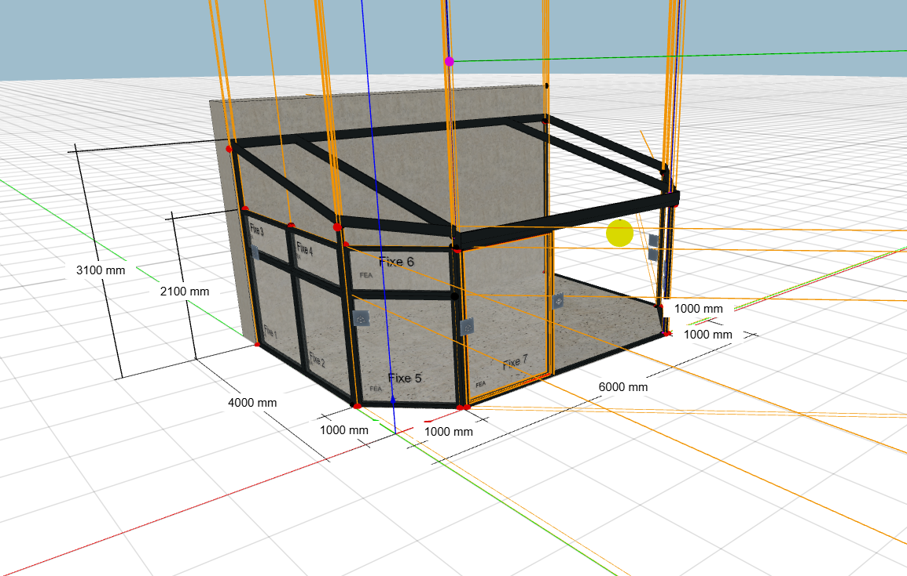
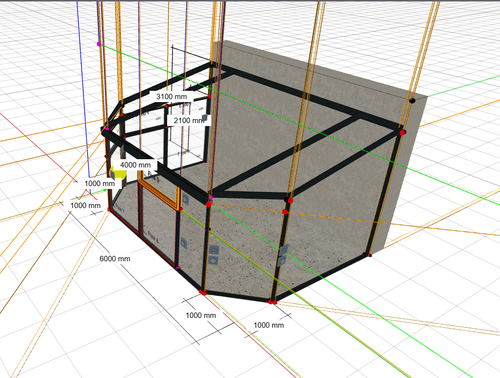

Boutons Chassis

Boutons Chassis
__________________________________________________________________________________________________________________________________________________________________________
J'ai créé des boutons pour pouvoir ajouter des chassis, et proposer de bonnes dimensions !
Utilisation des rays Babylon JS
 Démo